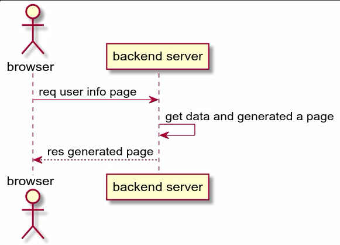
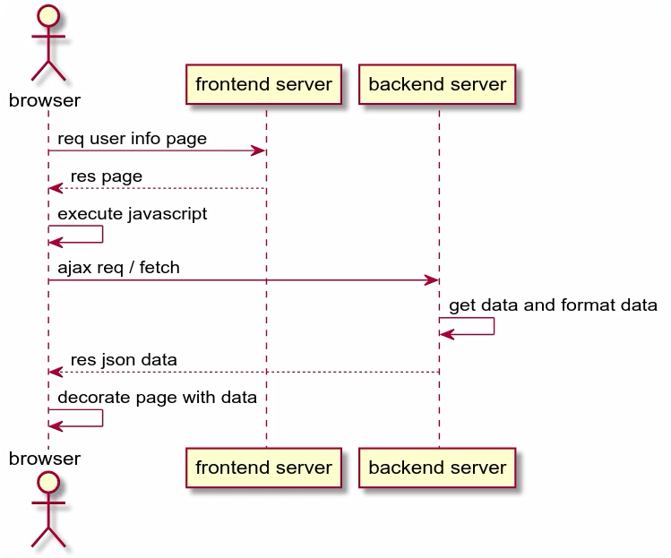
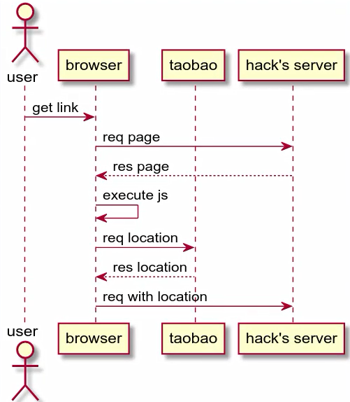
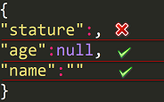
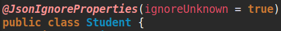

JSON
1.前后端分离
1.1.前后端分离前
适合开发小型项目
如果后台服务器宕机，将无法获取页面

1.2.前后端分离后
- 适合开发大型项目
- 如果后台服务器宕机，也可以有比较好的前端界面

1.3.跨域请求问题
同源：要求IP和端口都完全相同

- 解决方法：
nginx反向代理
2.Json在前端的使用
JSON(JavaScript Object Notation,JS 对象标记)是一种轻量级的数据交换格式，目前使用特别广泛。采用完全独立于编程语言的文本格式来存储和表示数据。简洁和清晰的层次结构使得
JSON成为理想的数据交换语言。JSON的存在有两种形式：JSON字符串和JSON对象JSON字符串和JSON对象JSON字符串 是JSON对象的字符串表示法- 任何
JSON对象支持的类型都可以通过JSON字符串来表示 - 它使用文本表示一个
JSON对象的信息，本质是一个字符串 - 需要操作
JSON中的数据的时候，需要JSON对象的格式。 - 需要在客户端和服务器之间进行数据交换的时候，使用
JSON字符串 - Json对象中键多以字符串形式出现，值可取字符串，数值，甚至其他json对象
1
2var obj = {a: 'Hello', b: 'World'}; //这是一个对象，注意键名也是可以使用引号包裹的
var json = '{"a": "Hello", "b": "World"}'; //这是一个 JSON 字符串，本质是一个字符串JSON字符串 和JSON对象互转JSON字符串—->JSON对象
1
2
3var obj = JSON.parse('{"a": "Hello", "b": "World"}');
====================================================
{a: 'Hello', b: 'World'}JSON对象—->JSON字符串
1
2
3var json = JSON.stringify({a: 'Hello', b: 'World'});
====================================================
'{"a": "Hello", "b": "World"}'
3.GSON
概述:Gson是Google提供的用来在Java对象和JSON数据之间进行映射的Java类库。可以将一个JSON字符串转成一个Java对象
功能：通过gson让json字符与javabean互相转换
导入
GSON.jar包1
2
3
4
5<dependency>
<groupId>com.google.code.gson</groupId>
<artifactId>gson</artifactId>
<version>2.8.2</version>
</dependency>JavaBean和JSON的互转1
2
3
4
5
6
7
8
9
10Person person = new Person(1, "name");
//创建Gson对象实例
Gson gson = new Gson();
// toJson 方法可以把java对象转换成为json字符串
String personJsonString = gson.toJson(person);
/* fromJson把json字符串转换回Java对象
* 第一个参数是 json 字符串
* 第二个参数是转换回去的Java对象类型
*/
Person person1 = gson.fromJson(personJsonString, Person.class);List和JSON的互转1
2
3
4
5
6
7
8
9
10
11
12List<Person> personList = new ArrayList<>( );
personList.add(new Person(1, "name1"));
personList.add(new Person(2, "name2"));
Gson gson = new Gson();
//把List转换为json字符串[JavaBean和JSON的互转 相同]
String personListIsonString = gson.toJson(personList);
/* fromJson把json字符串转换回List对象
* 第一个参数是 json 字符串
* 第二个参数是 自定义的PersonListType空类的type属性
*/
List<Person> list = gson.fromJson(personListJsonString, new PersonListType().getType());
Person person = list.get(0);自定义类继承官方
TypeToken1
2public class PersonListType extends TypeToken<ArrayList<Person>> {
}Map和JSON的互转1
2
3
4
5
6
7
8
9
10
11
12
13Map<Integer, Person> personMap = new HashMap<>();
personMap.put(1, new Person(1, "name1"));
personMap.put(2, new Person(2, "name2"));
Gson gson = new Gson();
//把map集合转换成为json字符串[JavaBean和JSON的互转 相同]
String personMapJsonString = gson.toJson(personMap);
/* fromJson把json字符串转换回Map对象[List和JSON的互转 相同]
* 第一个参数是 json 字符串
* 第二个参数是 自定义的PersonListType空类的type属性
*/
// Map<Integer,Person> personMap = gson.fromJson(personMapJsonString, new PersonMapType().getType());【匿名内部类优化】
Map<Integer, Person> personMap = gson.fromJson(personMapJsonString, new TypeToken<HashMap<Integer, Person>>(){}.getType());
Person p = personMap.get(1);1
2public class PersonMapType extends TypeToken<HashMap<Integer, Person>> {
}
4.注意事项
- json字符串中，如果value为””的话，后端对应属性如果是String类型的，那么接受到的就是””，如果是后端属性的类型是Integer、Double等类型，那么接收到的就是null。
- json字符串中，如果value为null的话，后端对应收到的就是null。
- 如果某个参数没有value的话，在传json字符串给后端时，要么干脆就不把该字段写到json字符串中；要么写value时， 必须有值，null 或””都行。

Fastjson & Jackson & Gson
JSON—->Java对象
总结：FastJSON、Jackson速度接近，Gson速度稍慢，不过差距很小。
Fastjson进行测试
- 当Fastjson字段少于实体类字段：正常通过，字段会被赋予默认值
- 当Fastjson字段多于实体类字段：正常通过，Fastjson多余字段不会被反序列化到对象中
Jackson进行测试：
当Jackson字段少于实体类字段：正常通过，没有的字段会被赋予默认值
当Jackson字段多于实体类字段：报错
在默认情况下，jackson是不支持json串的字段多于实体类字段的，
jackson也提供了解决方案：在实体类上，添加注解
@JsonIgnoreProperties
注解的
ignoreUnknown属性，默认值为false，改为true,这样jackson在反序列化的时候，就会忽略掉不存在的属性了
Java对象—->JSON序列化
- 总结：Jackson速度最快，在测试中比Gson快接近50%，FastJSON和Gson速度接近。
bean中属性名和json不一致解决方案
1 | (value = "CallbackCommand") |
原文作者: 掘金木匠
原文链接: http://goldcarpenter.github.io/2019/09/16/JSON/
版权声明: 转载请注明出处(必须保留作者署名及链接)